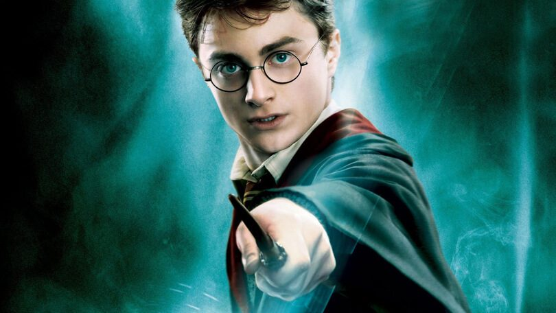

Harry Potter
Harry is de zoon van James Potter, een volbloed tovenaar, en Lily Potter, een heks met Dreuzelouders. James en
Lily waren beiden getalenteerde tovenaars en tegenstanders van de duistere tovenaar Heer Voldemort. Op een
koude,
natte avond in 1979 voorspelde de Zieneres Sybilla Zwamdrift dat er aan het einde van de zevende maand iemand
geboren zou worden die de macht heeft om de Heer van het Duister te overwinnen. Op 31 juli 1980 werd Harry
Potter,
de enige zoon van James en Lily, geboren...
